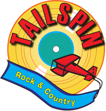

GIGS
Friday, January 28, 2022
8:00 PM to 12:00 AM
Howard Lake Legion,
616 7th Street, Howard Lake, MN 55349
Saturday, January 29, 2022
8:00 PM to 12:00 AM
Rush City VFW,
45 S Alger Ave, Rush City, MN 55069
Friday, February 4, 2022
9:00 PM to 1:00 AM
Ditto's,
23 Central Ave W, St Michael, MN 55376
Saturday, February 5, 2022
9:00 PM to 1:00 AM
Billy D's Crooked Tavern,
34 Oak Ave N, Annadale, MN 55302
Friday, February 11, 2022
8:00 PM to 12:00 AM
Howard Lake Legion,
616 7th Street, Howard Lake, MN 55349
Sunday, February 13, 2022
1:00 PM to 5:00 PM
Mr Jim's Bar-Afternoon of Old & Classic Country,
Hwy 23, Foley, MN 56329
Friday, February 18, 2022
7:00 PM to 11:00 PM
Hopkins VFW,
100 Shady Oak Road, Hopkins, MN 55343
Saturday, February 19, 2022
8:30 PM to 12:30 AM
Charlies Neison's Bar,
523 Main St, Henderson, MN 56044
Friday, February 25, 2022
8:30 PM to 12:30 AM
Monticello VFW,
713 S Cedar St, Monticello, MN 55362
Saturday, February 26, 2022
8:00 PM to 12:00 AM
Columbia Heights VFW,
4446 Central Ave NE, Columbia Heights, MN 55421
Friday, March 4, 2022
8:30 PM to 12:30 AM
J's Down Under,
22 Division St E, Buffalo, MN 55313
Saturday, March 5, 2022
7:30 PM to 11:30 PM
Pounders Bar & Grill,
610 West Lake St, Cologne, MN 55322
Friday, March 11, 2022
7:00 PM to 11:00 PM
Hopkins VFW,
100 Shady Oak Road, Hopkins, MN 55343
Saturday, March 12, 2022
8:00 PM to 12:00 AM
Howard Lake Legion,
616 7th Street, Howard Lake, MN 55349
Sunday, March 13, 2022
1:00 PM to 5:00 PM
Mr Jim's Bar-Afternoon of Old & Classic Country,
Hwy 23, Foley, MN 56329
Friday, March 18, 2022
7:00 PM to 11:00 PM
Elk River Legion,
525 Railroad Dr, Elk River, MN 55330
Saturday, March 19, 2022
4:30 PM to 10:30 PM
Whitetail Wilderness Bar,
27225 State Road 35, Webster, WI 54893
Sunday, March 20, 2022
2:30 PM to 5:30 PM
Minneapolis Eagles-Afternoon of Old & Classic Country,
2507 E 25th St, Minneapolis, MN 55406
Friday, March 25, 2022
8:30 PM to 12:30 AM
Monticello VFW,
713 S Cedar St, Monticello, MN 55362
Saturday, March 26, 2022
8:00 PM to 12:00 AM
Hugo Legion,
5383 140th N, Hugo, MN 55038
Friday, April 1, 2022
7:00 PM to 11:00 PM
Hopkins VFW,
100 Shady Oak Road, Hopkins, MN 55343
Saturday, April 2, 2022
8:00 PM to 12:00 AM
Waverly Muni,
702 Pacific Ave, Waverly, MN 55390
Saturday, April 9, 2022
8:30 PM to 12:30 AM
St Patricks Bar,
24436 Old Highway 13, New Prague, MN 56071
Sunday, April 10, 2022
1:00 PM to 5:00 PM
Mr Jim's Bar-Afternoon of Old & Classic Country,
Hwy 23, Foley, MN 56329
Friday, April 15, 2022
8:30 PM to 12:30 AM
Willow River Saloon,
1106 Country Rd A, Burkhardt, WI 54016
Saturday, April 23, 2022
7:30 PM to 11:30 PM
Osseo/Maple Grove Legion,
260 4th Ave SE, Osseo, MN 55369
Friday, April 29, 2022
7:00 PM to 11:00 PM
Elk River Legion,
525 Railroad Dr, Elk River, MN 55330
Saturday, April 30, 2022
8:00 PM to 12:00 AM
Howard Lake Legion,
616 7th Street, Howard Lake, MN 55349
Sunday, May 8, 2022
1:00 PM to 5:00 PM
Mr Jim's Bar-Afternoon of Old & Classic Country,
Hwy 23, Foley, MN 56329
Friday, May 13, 2022
8:30 PM to 12:30 AM
Monticello VFW,
713 S Cedar St, Monticello, MN 55362
Saturday, May 14, 2022
7:30 PM to 11:30 PM
Pounders Bar & Grill,
610 West Lake St, Cologne, MN 55322
Friday, May 20, 2022
8:00 PM to 12:00 AM
Howard Lake Legion,
616 7th Street, Howard Lake, MN 55349
Sunday, May 22, 2022
2:30 PM to 5:30 PM
Minneapolis Eagles-Afternoon of Old & Classic Country,
2507 E 25th St, Minneapolis, MN 55406
Sunday, May 29, 2022
8:00 PM to 12:00 AM
Pioneer Club-Memorial Weekend Party,
14026 657th St, Wabasha, MN 55981
Saturday, June 4, 2022
8:00 PM to 12:00 AM
Hugo Legion,
5383 140th N, Hugo, MN 55038
Sunday, June 12, 2022
1:00 PM to 5:00 PM
Mr Jim's Bar-Afternoon of Old & Classic Country
Hwy 23, Foley, MN 56329
Sunday, June 19, 2022
2:00 PM to 6:00 PM
Pearl Lake Lodge,
10600 County Road 8, Kimball, MN 55353
Friday, June 24, 2022
8:00 PM to 12:00 AM
Howard Lake Legion,
616 7th Street, Howard Lake, MN 55349
Saturday, June 25, 2022
8:30 PM to 12:30 AM
Willow River Saloon,
1106 Country Rd A, Burkhardt, WI 54016
Friday, July 1, 2022
8:00 PM to 12:00 AM
Whitetail Wilderness Bar,
27225 State Road 35, Webster, WI 54893
Sunday, July 3, 2022
8:00 PM to 12:00 AM
Pioneer Club-4th of July Weekend Party,
14026 657th St, Wabasha, MN 55981
Sunday, July 10, 2022
1:00 PM to 5:00 PM
Mr Jim's Bar-Afternoon of Old & Classic Country,
Hwy 23, Foley, MN 56329
Saturday, July 16 2022
8:00 PM to 12:00 AM
Howard Lake Legion,
616 7th Street, Howard Lake, MN 55349

